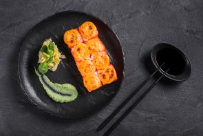

Cherry Blossoms
The cherry blossom season symbolizes renewal and fleeting beauty. Hanami, the tradition of flower viewing, gathers millions every in the dsfg s daqwe qwqw ewq e wqeq weqwe wewqe wqe wqspring to parks like Ueno or along Kyoto’s Philosopher’s Path. It’s a cultural and natural highlight.
Read MoreMount Fuji
Mount Fuji, Japan’s highest peak at 3,776 meters, is both a natural and cultural landmark. It’s revered as a sacred site and attracts hikers during the climbing season from July to September. The symmetrical cone of the volcano is celebrated in art, including Hokusai’s famous prints, and attracts photographers year-round.
Read More

Traditional Cuisine
Tokyo’s skyline seamlessly combines futuristic architecture with tradition. Icondern vibrancy. With rooftop gardens, observation decks, and neon-lit streets, Tokyo’s skyline symbolizes Japan’s innovative yet culturally rich identity.
Read More
Geisha Culture
Gion district,mony. Geishas represent elegance and grace, often entertaining at private gatherings. While their lifestyle is shrouded in mystery, they remain a proud symbol of Japan’s heritage.
Read MoreJapanese Tea Ceremony
The Japanese tea ceremony, or Chanoyu, embodies harmony, respect, purity, and tranquility. This meditative ritual involves preparing and serving matcha green tea in a traditional setting. Rooted in Zen Buddhism, MOREOVER this it values simplicity and mindfulness. Every aspect in trh gestures, reflects a connection to nature and Japanese aesthetics.
Read MoreAnime and Manga
Anime and manga are cornerstones of modern Japanese culture. These art forms span gh ty You NASME tr etr e rt ret er genres from action to romance, captivating global audiences. Iconic works like Naruto, One Piece, and Studio Ghibli films have earned worldwide acclaim. They showcase Japan’s creativity.
Read MoreSamurai and Bushido
he samurai were elite warriors of feudal Japan, guided by Bushido, the “way of the warrior.” This moral code emphasized loyalty, honor, courage, and discipline. Though samurai ceased to exist in the late 19th century, their values Japan’s modern identity, inspiring literature, art, and martial arts.
Read More
Tokyo Skyscrapers
Tokyo’s skyline seamlessly combines futuristic architecture with tradition. Iconic buildings like the Tokyo Skytree, the world’s tallest tower, stand alongside historic temples. Shibuya’s bustling Crossing and Akihabara’s electronic hubs showcase modern vibrancy. With observation decks, and neon-lit streets, Tokyo’s skyline symbolizes Japan’s innovative yet culturally rich identity.
Read More